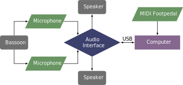

This piece was written in 2019 and revised in 2020. The piece can be obtained by contacting the composer at her website.
This piece requires the spat5 external, which can be downloaded online from the IRCAM forum. This piece requires two microphones and two speakers. The performer can use a MIDI pedal to control the patch. It listens for a value of 127 on controllers 64 or 65, as well as a "Note On" message for note 60. The spacebar can also be used to advance the patch.
A setup diagram for this piece is shown below. 
This piece has many technical challenges, especially the use of extended techniques. There are multiphonics, bisbigliando (timbral trills), quarter tones, flutter-tonguing, and glissandi between quarter tones. In most sections, the rhythm is relatively free and slow. The electronics part is not too challenging, and most of the pedal changes are not close to each other. The overall slower speed and free meter may make it possible for some advanced undergraduate students to perform, but it is probably better suited for graduate students and professionals.
This piece falls in the avant-garde style. The extended use of multiphonics, bisbigliando, and quarter tones may be less accessible to audiences unfamiliar with more experimental music.
©2025 by Benjamin Bradshaw
Logo ©2025 by Hannah Bradshaw